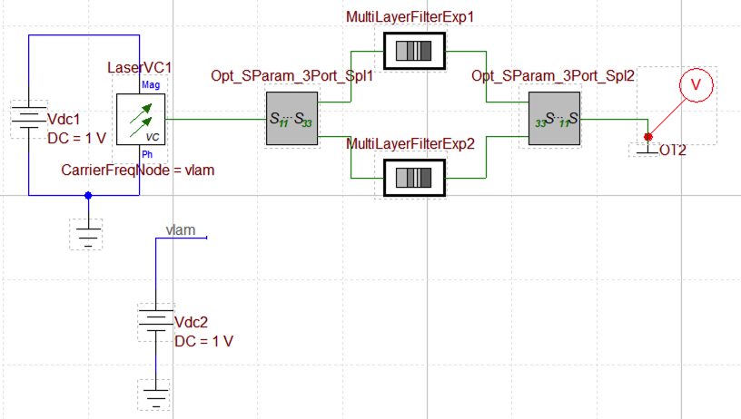
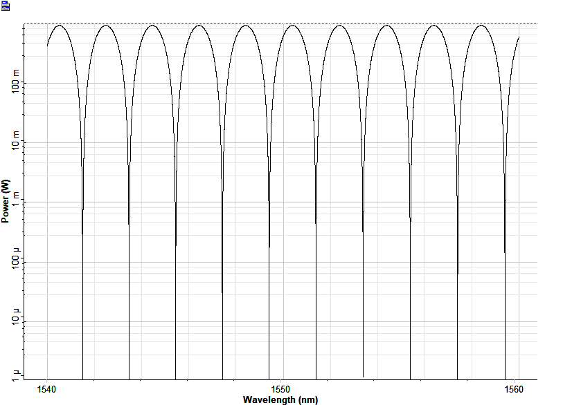
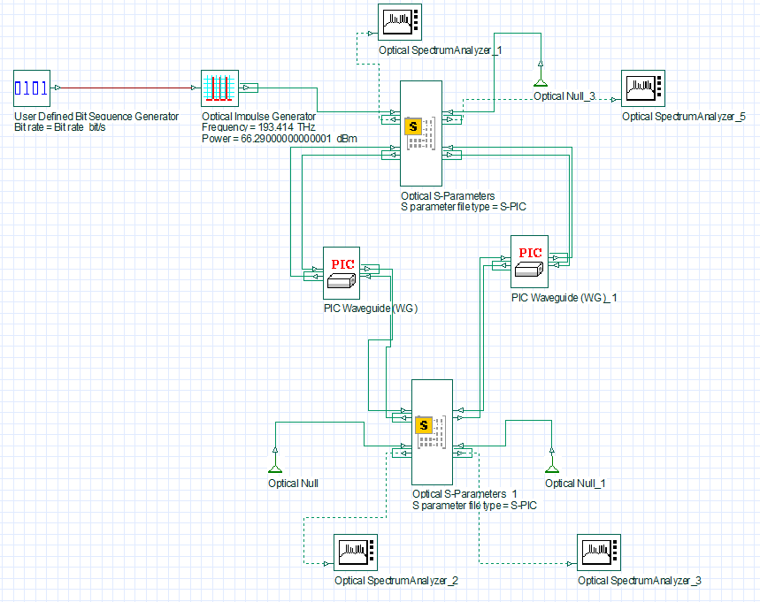

Internal
OptiSPICE
OptiOmega can be used with Optiwave’s electro-optic circuit simulator named OptiSPICE which is based on the SPICE engine, that allows to carry out both frequency as well as time-domain simulations based on modified nodal analysis (MNA).
OptiSPICE allows to run complex circuit simulations which is not feasible using full EM solvers like Finite Difference Time Domain (FDTD), Beam Propagation Method (BPM) and Eigen Mode Expansion (EME). It models each device based on compact models like s-matrix, modes effective/group index data and differential equations and use these devices to build and simulate Photonic Integrated Circuit (PIC). OptiSPICE produces self consistent solutions for optoelectronic circuits that contain feedback loops spanning both optical and electrical parts. OptiSPICE aids in modelling thermal and electrical effects of the devices, design electro-optic control loops, offer post-processing capabilities and convert optical-to-electrical S-parameters which is a standard requirement in electrical engineering world.
Example: Mach-Zehnder Interferometer
This example demonstrates the essential steps to calculate the effective refractive index (neff) data as a function of wavelength using the Vector Finite Difference (VFD) mode solver. The neff calculated is for the fundamental TE mode. We also use the Finite-Difference Time-Domain (FDTD) solver to calculate the S-parameters of a Y-splitter. We then use these neff data and the S-parameters to build and simulate an MZI inside OptiSPICE.
Step 1: Simulate a Straight Waveguide
We simulate a waveguide using mode solver and extract the effective refractive index data in a .txt format which will be used to model the waveguide in OptiSPICE.
from pyModeSolver.pyModeSolver import VFDModeSolver
from pyOptiShared.LayerInfo import LayerStack
from pyOptiShared.DeviceGeometry import DeviceGeometry
from pyOptiShared.Material import ConstMaterial
import numpy as np
import gdstk
##########################################
### Material Settings ###
##########################################
# Low-index material (n=1.444) for substrate
substrate_mat = ConstMaterial("SiO2", epsReal=1.444**2, epsImag=0.0)
# High-index material (n=3.48) for waveguide core
core_mat = ConstMaterial("Si", epsReal=3.48**2, epsImag=0.0)
##########################################
### Layer Stack Settings ###
##########################################
layer_stack = LayerStack()
# Add first layer: 250nm thick at z=0
layer_stack.AddLayer(number=1, material=core_mat, thickness=0.22,
zmin=0, sideWallAng=0, cladding="Air_default")
# Set background (above structure) and substrate (below structure)
layer_stack.SetBGandSub(background="Air_default", substrate=substrate_mat)
##########################################
### Device Geometry/Port Settings ###
##########################################
len = 5
width = 0.5
layer_core = 1
output_filename = "wg.gds"
lib = gdstk.Library()
strt_wg = lib.new_cell("Straight_WG")
vertices = [(0, -width/2), (len, -width/2), (len, width/2), (0, width/2)]
strt_wg.add(gdstk.Polygon(vertices, layer=layer_core))
lib.write_gds(output_filename)
device_geometry = DeviceGeometry()
device_geometry.SetFromGDS(
layer_stack=layer_stack,
gds_file="wg.gds",
buffers={'x': 1, 'y': 1, 'z': 1} # 1 μm padding on all sides
)
##########################################
### ModeSolver Settings ###
##########################################
mode_solver = VFDModeSolver()
# Set boundary conditions (PMC = Perfect Magnetic Conductor)
mode_solver.SetBoundaries(min_x = "pmc", max_x = "pmc",
min_y = "pmc", max_y = "pmc")
lams=np.linspace(start=1.5,stop=1.6,num=21)
# Configure simulation settings
mode_solver.SetSimSettings(
device_geometry=device_geometry,
mesh={"dx": 0.025, "dy": 0.025, "dz": 0.025}, # 25nm mesh resolution
wavelength=lams, # 1.5-1.6 μm range
nguess=2.1, # Initial guess for effective index
nmodes=1, # Find first mode
cut_plane="YZ", # Cross-section plane (propagation along X)
cut_location=0.0, # Position along X-axis
tol=1e-8, # Convergence tolerance
results_path="./ModeResults",
device_name="my_results"
)
##########################################
### Run and Results Visualization ###
##########################################
# Run the simulation
results = mode_solver.Run()
# Visualize results
results.PlotMode(field='Hx') # Field profiles
results.PlotPermittivity() # Material cross-section
results.PlotIndex('neff', modes=[0]) # Effective index vs wavelength
results.PlotIndex('ng', modes=[0]) # Group index vs wavelength
results.ExportNeff("StraightWG-neffData", 0) # Exports effective index data in a .txt format
results.ExportNg("StraightWG-ngData", 0) # Exports group index data in a .txt format
The effective refractive index for the waveguide, extracted from the simulation, is shown in the plot below:
{kind=link}
Step 2: Simulate a Y-splitter
Next we simulate a Y-splitter using the FDTD solver and extract the S-parameters in a .txt format to be used later in building the MZI circuit in OptiSPICE.
from pyOptiShared.DeviceGeometry import DeviceGeometry
from pyOptiShared.LayerInfo import LayerStack
from pyOptiShared.Material import ConstMaterial
from pyFDTDKernel.pyFDTDSolver import pyFDTDSolver
# Define Materials
si02_mat = ConstMaterial(mat_name="SiO2", epsReal=1.45**2,color='lightgreen')
si_mat = ConstMaterial(mat_name="Si", epsReal=3.5**2,color='lightblue')
air_mat = ConstMaterial(mat_name="Air", epsReal=1**2,color='lightyellow')
# Creates the Layer Stack
layer_stack = LayerStack()
layer_stack.AddLayer(name="L1", number=1, thickness=0.22, zmin=0.0,
material=si_mat, cladding=si02_mat,
sideWallAng=0)
layer_stack.SetBGandSub(background=si02_mat, substrate=si02_mat)
# Defines the Device Geometry
device_geometry = DeviceGeometry()
device_geometry.SetFromGDS(
layer_stack=layer_stack,
gds_file='splitter.gds',
buffers={'x':1.5,'y':1.5,'z':1.5}
)
device_geometry.SetAutoPortSettings(direction='x',port_buffer=1)
# General Simulation Settings and Simulation Run
lmin = 1.5
lmax = 1.6
lcen = (lmax+lmin)/2
npts=101
tfinal = 350
fdtd_solver = pyFDTDSolver()
fdtd_solver.SetExcitation(profile="gaussian-pw", lcenter=lcen, lmin=lmin, lmax=lmax, npts=npts, mode_indices = 0,symmetries='1x2')
fdtd_solver.AddDFTMonitor(mon_type="2d-z-normal", z0=0.11, name="MyDFTMonitor1",
lmin=lmin, lmax=lmax,npts=npts,
save_hz=True)
fdtd_solver.SetSimSettings(sim_time=tfinal, space_step=0.05, subpixel_level=2, results_path=r"results",device_name='splitter',
device_geometry = device_geometry,auto_shutoff_limit=1e-3)
results = fdtd_solver.Run()
results.PlotSParameters(snp=['S11', 'S12', 'S13'], plot_type='power')
After simulation completes, the s-parameters are automatically saved in results folder, created under current directory. The power transmission of the Y-splitter is shown below:
{kind=link}
Step 3: MZI Simulation in OptiSPICE
Next we use the S-parameters and the neff extracted from the simulations and feed it in the OptiSPICE to simulate a MZI circuit and characterize its performance. We use the S-parameter device model from OptiSPICE device library to model the Y-splitter using the S-parameters and the waveguide device model to load the neff data and model the waveguide. The MZI simulation circuit is shown below:
{kind=link}

The laser sends in the signal to the MZI circuit which is formed using two 1x2 S-parameter models and two waveguide models. The probe measures the output signal which is connected to the optical terminator. The vlam node of the Vdc2 is connected to the laser node to sweep the laser wavelength. A DC analysis is done where Vdc2 is selected as the source voltage and the start and stop values are used to define the wavelength span. The laser is swept from 1540 nm to 1560 nm with the step of 0.001. The transmission plot from the probe is shown below:
{kind=link}

OptiSystem
OptiOmega seamlessly interfaces with OptiSystem which is a powerful optical system design software and a flagship product of Optiwave simulation suite. It has more than 600 different components and offers a huge library of application examples in various domains. It has the capability to simulate nearly all kinds of optical links within the transmission layer, encompassing a wide range of optical networks from SAN, LAN and MAN to ultra-long-haul networks. It also offers the capabilities to simulate Free Space Optics (FSO) and underwater channel communication systems. OptiSystem enables users to plan, test and simulate complex systems in both time and frequency domain. It also offers to simulate the Photonic Integrated circuits (PICs) and characterize its performance using variety of visualizers.
The building blocks can be simulated using the VFD Mode Solver and FDTD Electromagnetic Solver and use these results to simulate the chip/system level circuits in OptiSystem. Here, we demonstrate simulating a basic ring resonator in OptiSystem with the aid of building blocks
such as: directional coupler and a straight waveguide.
Example: Ring-Resonator
Step 1: Simulate a Straight Waveguide
A straight waveguide is simulated using VFD Mode Solver and the effective refractive index (neff) data is extracted in a .txt format.
from pyModeSolver.pyModeSolver import VFDModeSolver
from pyOptiShared.LayerInfo import LayerStack
from pyOptiShared.DeviceGeometry import DeviceGeometry
from pyOptiShared.Material import ConstMaterial
import numpy as np
import gdstk
##########################################
### Material Settings ###
##########################################
# Low-index material (n=1.444) for substrate
substrate_mat = ConstMaterial("SiO2", epsReal=1.444**2, epsImag=0.0)
# High-index material (n=3.48) for waveguide core
core_mat = ConstMaterial("Si", epsReal=3.48**2, epsImag=0.0)
##########################################
### Layer Stack Settings ###
##########################################
layer_stack = LayerStack()
# Add first layer: 250nm thick at z=0
layer_stack.AddLayer(number=1, material=core_mat, thickness=0.22,
zmin=0, sideWallAng=0, cladding="Air_default")
# Set background (above structure) and substrate (below structure)
layer_stack.SetBGandSub(background="Air_default", substrate=substrate_mat)
##########################################
### Device Geometry/Port Settings ###
##########################################
len = 5
width = 0.5
layer_core = 1
output_filename = "wg.gds"
lib = gdstk.Library()
strt_wg = lib.new_cell("Straight_WG")
vertices = [(0, -width/2), (len, -width/2), (len, width/2), (0, width/2)]
strt_wg.add(gdstk.Polygon(vertices, layer=layer_core))
lib.write_gds(output_filename)
device_geometry = DeviceGeometry()
device_geometry.SetFromGDS(
layer_stack=layer_stack,
gds_file="wg.gds",
buffers={'x': 1, 'y': 1, 'z': 1} # 1 μm padding on all sides
)
##########################################
### ModeSolver Settings ###
##########################################
mode_solver = VFDModeSolver()
# Set boundary conditions (PMC = Perfect Magnetic Conductor)
mode_solver.SetBoundaries(min_x = "pmc", max_x = "pmc",
min_y = "pmc", max_y = "pmc")
lams=np.linspace(start=1.5,stop=1.6,num=21)
# Configure simulation settings
mode_solver.SetSimSettings(
device_geometry=device_geometry,
mesh={"dx": 0.025, "dy": 0.025, "dz": 0.025}, # 25nm mesh resolution
wavelength=lams, # 1.5-1.6 μm range
nguess=2.1, # Initial guess for effective index
nmodes=1, # Find first mode
cut_plane="YZ", # Cross-section plane (propagation along X)
cut_location=0.0, # Position along X-axis
tol=1e-8, # Convergence tolerance
results_path="./ModeResults",
device_name="my_results"
)
##########################################
### Run and Results Visualization ###
##########################################
# Run the simulation
results = mode_solver.Run()
# Visualize results
results.PlotMode(field='Hx') # Field profiles
results.PlotPermittivity() # Material cross-section
results.PlotIndex('neff', modes=[0]) # Effective index vs wavelength
results.PlotIndex('ng', modes=[0]) # Group index vs wavelength
results.ExportNeff("StraightWG-neffData", 0) # Exports effective index data in a .txt format
results.ExportNg("StraightWG-ngData", 0) # Exports group index data in a .txt format
The effective refractive index for the waveguide, extracted from the simulation, is shown in the plot below:
Step 2: Simulate a Directional Coupler
The directional coupler is simulated using FDTD Electromagnetic Solver and the optical S-parameters are extracted in a .txt format. In this simulation, we are sweeping the parameter gap of the directional coupler from 0.1um to 0.5um. After simulation completes, the s-parameters for each iteration are automatically saved in the results folder, created under current directory.
from pyOptiShared.DeviceGeometry import DeviceGeometry
from pyOptiShared.LayerInfo import LayerStack
from pyOptiShared.Material import ConstMaterial,ExperimentalMaterial
from pyFDTDKernel.pyFDTDSolver import pyFDTDSolver
import gdsfactory as gf
import numpy as np
import matplotlib.pyplot as plt
def dir_coupler(gap:float=0.1,length:float=5.0)->gf.Component:
c = gf.Component()
coupler = gf.components.coupler(gap=gap,length=length)
ref = c.add_ref(coupler)
return c
# Material Settings
# Here we import the material data from "refractiveindex.info"
sio2_exp = ExperimentalMaterial("my_material_SiO2")
sio2_exp.SetFromRefDotInfo(shelf="main", book="SiO2", page="Malitson")
si_exp = ExperimentalMaterial("my_material_Si")
si_exp.SetFromRefDotInfo(shelf="main", book="Si", page="Pierce")
# Layer Stack Settings
layer_stack = LayerStack()
layer_stack.AddLayer(name="L1", number=1, thickness=0.22, zmin=0.0,
material=si_exp, cladding=sio2_exp,
sideWallAng=0)
layer_stack.SetBGandSub(background=sio2_exp, substrate=sio2_exp)
#Device Geometry Settings
device_geometry = DeviceGeometry()
device_geometry.SetFromFun(
layer_stack=layer_stack,
func=dir_coupler,
parameters=(0.1,0),
buffers={'x':1.0,'y':1.0,'z':1.0})
device_geometry.SetAutoPortSettings(direction='x',port_buffer=1,min=[0.1,0.51],max=[0.55,0.55])
# Simulation Settings and Runs
lmin = 1.5
lmax = 1.6
lcen = (lmax+lmin)/2
npts = 51
tfinal = 1500
gap = np.linspace(0.1, 0.5, 5)
s31_data = list()
s41_data = list()
for ii in range(0, len(gap)):
G = gap[ii]
script_parameters = (0.1, G)
device_geometry.UpdateScriptParams(script_parameters)
fdtd_solver = pyFDTDSolver()
fdtd_solver.SetExcitation(profile="gaussian-pw", lcenter=lcen, lmin=lmin, lmax=lmax, npts=npts, mode_indices=0,symmetries='2x2')
fdtd_solver.AddDFTMonitor(mon_type="2d-z-normal", z0=0.11, name="MyDFTMonitor1",
lmin=lmin, lmax=lmax,npts=npts,
save_ex=True, save_ey=True, save_ez=True,
save_hx=True, save_hy=True, save_hz=True)
fdtd_solver.SetSimSettings(sim_time=tfinal, space_step=0.03, subpixel_level=2, results_path=r"results",device_name='coupler',
device_geometry = device_geometry, export_mat_grid=True)
results = fdtd_solver.Run()
S31 = results.sparameters['S31'].Get('data')
s31_data.append(abs(S31[1])**2)
S41 = results.sparameters['S41'].Get('data')
s41_data.append(abs(S41[1])**2)
results.PlotDFTMonitor(mon_name='MyDFTMonitor1',field='Ey')
plt.figure()
plt.plot(gap,s31_data,label='S31')
plt.plot(gap,s41_data,label='S41')
plt.xlabel('Coupler Gap (um)')
plt.legend()
plt.ylim([0,1])
plt.grid()
plt.show()
After simulation completes, the s-parameters are automatically saved in the results folder, created under current directory. The \(|S_{13}|^2\) and \(|S_{14}|^2\) from the S-parameters of the directional coupler (gap=0.5um) are shown below:
{kind=link}
Step 3: Ring-Resonator Simulation in OptiSystem
The neff data is used to model the straight waveguide inside the ring-resonator circuit. OptiSystem offers a device named PIC Waveguide (W.G) whose input and output port is represented by two In/Out ports, respectively, to properly handle the forward and backward propagating signals. This device is used to model the waveguide.
The Optical S-Parameters component is used to model the directional coupler where the S-parameters of the simulated directional coupler are loaded as a .txt file. The port definitions of the directional coupler are automatically generated inside the S-parameter .txt file which are important to create the correct In/Out ports for the Optical S-Parameters component in OptiSystem.
The simulation setup of the ring-resonator in OptiSystem is shown below where a frequency analysis is carried out. An impulse generator sends a frequency signal inside the ring resonator centerd at 193.414 THz. The frequency span is set to 320 GHz. The ring resonator comprises of two Optical S-Parameters components behaving as directional couplers and two PIC Waveguide (W.G) components forming the ring length.
We use the S-parameters for the parameter gap of 0.5 um.
The ring length for this simulation is set to 1000 um. The Optical Spectrum Analyzer component is used to measure the signal at the through and drop port of the ring-resonator. The Optical Null is used to terminate the non-functional ports.
{kind=link}

The transmission response of the ring-resonator is shown here which gives an FSR of ~ 69.4 GHz. The central resonant frequency is 192.789124 THz which gives a FWHM of ~ 3.17 GHz and a Q-factor of 60,928.
{kind=link}
Now, we characterize the performance of the ring-resonator by studying the shift of the resonance frequency due to incremental change in the optical path length of the ring, by 2 um. This analysis is show in the plot below:
{kind=link}